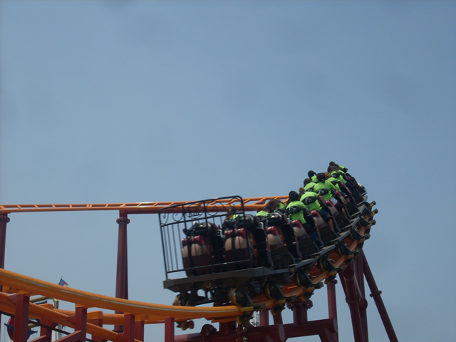
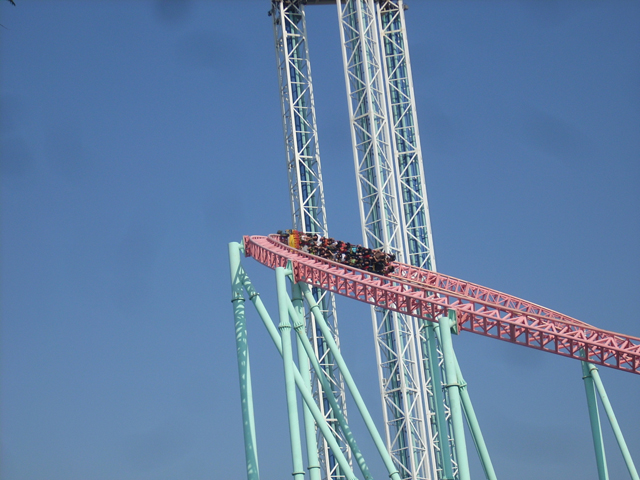
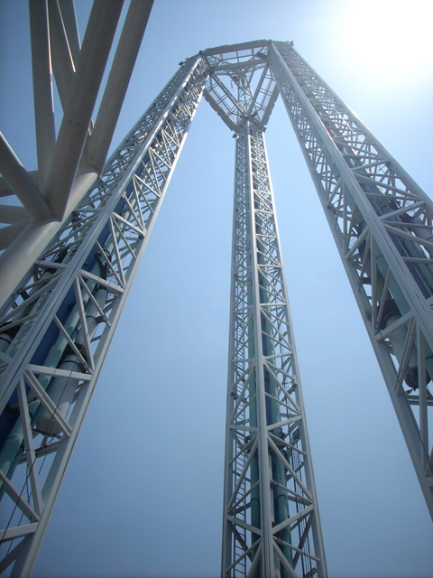
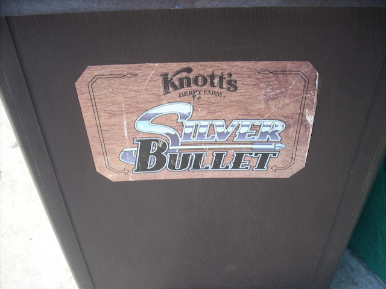
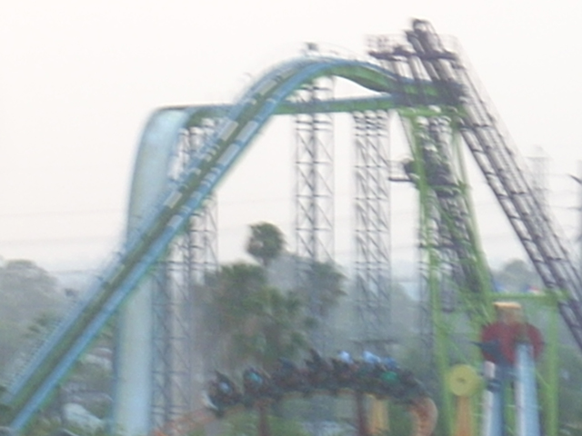

Knotts Summer 2008
Ok, so you all know that Knotts just opened a new coaster. Well, since there was coaster in Southern California I hadn't ridden, I had to fix that. So anyways, we're here at Knotts Berry Farm.
 Uh Oh. What's that?
Uh Oh. What's that?
Schoolkids. Hundereds and Hundreds of schoolkids.
Oh s**t!
 Anyways here's credit #98. Pony Express.
Anyways here's credit #98. Pony Express.
 Here, you can see the train about to go through the weakest launch ever.
Here, you can see the train about to go through the weakest launch ever.

Then it goes through a turnaround. (Notice how the train has been invaded by schoolkids.)
Ok, Xcelerator has gotten the DejaVu Effect. It's headrests are now sharpie black.
Those people are happy because they're getting airtime.

Xcelerator with Supreme Scream in the background.
 I should ride Boomerang now before it gets schoolkid invaded.
I should ride Boomerang now before it gets schoolkid invaded.
 Yeah, I walked on. When I got off, the switchbacks were filled with schoolkids.
Yeah, I walked on. When I got off, the switchbacks were filled with schoolkids.
Oh boy! A drop tower that's over 200 feet tall! That sounds AWSOME!!!!

Too bad it sucks.
The schoolkids have invaded! We have to get out of here!!!!
 Quick!!! I'm sure they won't be allowed in here!!!
Quick!!! I'm sure they won't be allowed in here!!!
If you think someone in the gun shop that wants to shoot you, buy a knife from the knife shop.
 More Pony Express Goodness.
More Pony Express Goodness.
 Click here to see my raw footage of Pony Express.
Click here to see my raw footage of Pony Express.
Wow, Cedar Fair is so stupid that they think people will actually name their dog "Red Dog"!!!!! But what do you expect from a company that likes to call their coasters F***** D***.
 Let's see how Ghostrider is running.
Let's see how Ghostrider is running.
Never mind.

At least Silver Bullet was running 2 trains today.
 Silver Bullet must get more forceful with age.
Silver Bullet must get more forceful with age.
Suprisingly, this isn't the most boring coaster at Knotts.
Sorry Celeste, but Timberline Twister has been schoolkid invaded.
While the schoolkids invade all the coasters, Celeste invades the Peanuts Playhouse!!!
 Ahh Damn it! I can't leave Celeste in here and go ride Xcelerator!!!
Ahh Damn it! I can't leave Celeste in here and go ride Xcelerator!!!
I AM BRITNEY SPEARS II!!! QUEEN OF THE PEANUTS PLAYHOUSE!!!!!!
"Get the f**k out of my playhouse you little schoolkid before I call Dick Kenzel to change your name to something ridiculous and stupid!!!"
 I don't even have to try when going across the monkey bars!
I don't even have to try when going across the monkey bars!
This is my Playhouse! This is my Illusion! I'm lost in a dream of you and me, so caught up in confusion!
 And then we end the day with a classic Shuttle Loop.
And then we end the day with a classic Shuttle Loop.
There's more! Just down this hallway is...
 THE LEDGE OF DEATH!!!
THE LEDGE OF DEATH!!!
 It is REALLY creepy up on the ledge of death.
It is REALLY creepy up on the ledge of death.

Pony Express from the ledge of death.
 And finally, I'll leave you with Behind the Scenes of being up on the Ledge of Death. Hope you enjoyed the update.
And finally, I'll leave you with Behind the Scenes of being up on the Ledge of Death. Hope you enjoyed the update.
Home